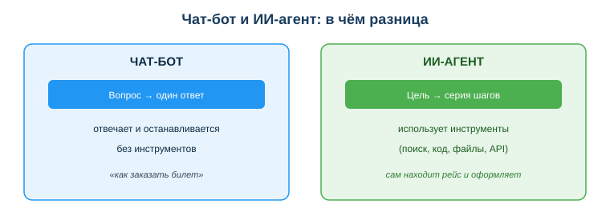
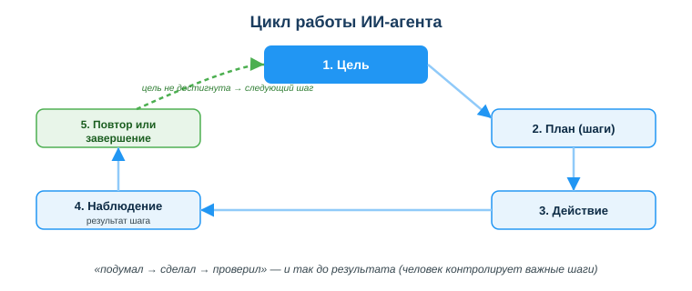

Понимать основы ИИ-агентов и агентных сценариев (AI agents)
Практическая ситуация
Ты просишь обычный ИИ-чат: «найди 5 свежих статей по теме и сделай резюме». Он отвечает: «вот как искать статьи…» — и останавливается. А тебе нужно, чтобы он сам нашёл, открыл, прочитал и собрал результат. Именно это делает ИИ-агент: получает цель и идёт к ней шагами, а не одним ответом.

Что ты научишься делать
- отличать ИИ-агента от обычного чат-бота;
- объяснять цикл работы агента (цель → действие → проверка);
- видеть возможности и риски агентов и держать человека в контроле.
Почему это важно
Агенты — самый быстрорастущий способ применять ИИ: вместо «спросил — ответил» получается «поставил задачу — агент выполнил». Это меняет рутину: сбор данных, отчёты, проверки можно поручить агенту.
Связь с профессией: разработчику всё чаще нужно не просто писать код, а собирать и настраивать агентов — давать им инструменты, ограничивать права, проверять результат. Это новый и востребованный навык.
Учимся читать схему
Посмотри на сравнение чат-бота и агента выше. Ответь на вопросы:
- что получает на вход чат-бот, а что — агент?
- чем агент пользуется, чтобы выполнить шаги?
- почему агент может сделать то, что чат-бот только опишет словами?
Главное понятие
ИИ-агент — программа на основе ИИ, которая получает цель и самостоятельно выполняет последовательность шагов с помощью инструментов (поиск, код, файлы, API), пока цель не достигнута.
Проще: чат-бот отвечает, агент действует. Чат-бот посоветует, «как заказать билет», агент — сам найдёт рейс и оформит (если ему это разрешили).
Как работает агент
В основе — повторяющийся цикл:
- Цель — что нужно получить;
- План — агент разбивает цель на шаги;
- Действие — выполняет шаг через инструмент;
- Наблюдение — смотрит на результат;
- Повтор или завершение — делает следующий шаг, пока цель не достигнута.

Цикл «подумал → сделал → проверил» и отличает агента: он работает серией действий, а не одним ответом.
Мини-кейс
Цель: «5 свежих статей по теме + краткое резюме». Агент: ищет → открывает каждую → извлекает суть → составляет резюме → проверяет, что статей 5. Человек получает результат, но проверяет источники — агент мог взять нерелевантную статью.
Возможности и риски
Возможности: автоматизация рутины (сбор данных, отчёты), работа с несколькими инструментами, ускорение типовых задач.
Риски: ошибка на одном шаге переносится дальше; при избыточных правах агент может выполнить нежелательное действие. Принцип — человек в контуре (human-in-the-loop): важные шаги подтверждает человек.
Разбор типичной ошибки
Ошибка: «Раз агент сам всё делает, можно дать ему полные права и не проверять».
Почему: агент может неправильно понять задачу, взять плохой источник или ошибиться на шаге — а с полными правами одна ошибка приведёт к реальным последствиям (удалит, отправит, оплатит).
Как правильно: ограничивать права, подтверждать важные шаги вручную и проверять результат — держать человека в контуре.
Практика
Ответь письменно:
- Назови, чем агент отличается от чат-бота (минимум 2 отличия).
- Перечисли шаги цикла работы агента по порядку.
Образец (часть ответа на пункт 1): «Чат-бот отвечает одним сообщением и останавливается; агент получает цель и сам выполняет серию шагов, используя инструменты — поиск, код, API».
Самопроверка
- Я могу объяснить, чем агент отличается от чат-бота.
- Я знаю шаги цикла агента: цель → план → действие → наблюдение → повтор.
- Я понимаю, зачем нужен человек в контуре (human-in-the-loop).
Подумай
- Какую твою учебную или рабочую рутину мог бы взять на себя агент? Какие шаги он бы выполнял?
- Почему «дать агенту все права» опаснее, чем «дать минимум и подтверждать важное»?
Итог
Что теперь делать:
- ИИ-агент получает цель и сам выполняет шаги через инструменты — в отличие от чат-бота;
- помни цикл: цель → план → действие → наблюдение → повтор/завершение;
- используй агентов для рутины, но держи человека в контуре;
- ограничивай права агента и всегда проверяй результат.
Полезные ссылки
Источник: материалы по применению ИИ и автоматизации (DigComp 2.2; UNESCO AI Competency Framework, 2024); обзорные публикации по ИИ-агентам.
Разработал: преподаватель ИКТ, магистр управления и информационной безопасности Калиаскаров Д.А.
Материал одобрен к использованию в обучении решением Педагогического совета ТОО «Колледж Хекслет Казахстан».